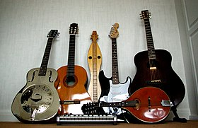

Гита́ра — струнный щипковый музыкальный инструмент. Применяется в качестве аккомпанирующего или сольного инструмента во многих стилях и направлениях музыки, среди которых романс, блюз, кантри, фламенко, рок, джаз. Изобретённая в XX веке электрическая гитара произвела значительные изменения в музыке и тем самым оказала сильное влияние на массовую культуру. Также есть классическая гитара, гитара фламенко, испанская гитара и некоторые другие виды.

Виды
Испанская гитара
В Средние века основным центром развития гитары была Испания, генезис которой обычно связывают с арабским влиянием (мавританская гитара). В XV веке получает распространение изобретённая в Испании гитара с 5 сдвоенными струнами (первая струна могла быть и одиночной). Такие гитары получают название испанских. К концу XVIII века испанская гитара в процессе эволюции приобретает 6 одиночных струн и немалый репертуар произведений, на формирование которого оказал значительное влияние живший в конце XVIII — начале XIX века итальянский композитор и гитарист-виртуоз Мауро Джулиани. В Англии классическим произведением для обучения игре на гитаре в конце XVII века стала работа «Тhe False Consonances of Music» («False consonance della musica per toccar la chitarra sopra all partie in breve….» или «Неправильные гармонии в музыке») (автор — итальянский скрипач и гитарист Маттейс Никола, большую часть жизни проживший на Британских островах).
В Россию испанская гитара попала в XVIII веке, отчасти благодаря работавшим в России итальянским композиторам и музыкантам, в первую очередь Джузеппе Сарти и Карло Каноббио. Ещё через какое-то время, в начале XIX века, гитара упрочила своё положение в России благодаря приехавшим в 1821 году в Петербург Марку Аврелию Цани де Ферранти, затем гастролировавшим Мауро Джулиани и Фернандо Сор. Сор, оставив в Москве жену-балерину, ставшую первой русской женщиной-балетмейстером, посвятил поездке в Россию музыкальное произведение для гитары с названием «Воспоминание о России». Это произведение исполняется и сейчас. Первым из значительных русских гитаристов, игравших на шестиструнном инструменте, был Николай Петрович Макаров.
Шестиструнная испанская гитара, или, как её называют сейчас в России, классическая гитара, широко распространена. Она была немного видоизменена. Её преподают в музыкальных школах, колледжах, училищах, вузах. Сейчас на ней играют не только испанскую музыку, но и классическую. А иногда и другие стили музыки, благодаря современным композиторам. Подробнее описано ниже в статье Классическая гитара.
Русская семиструнная гитара
В словаре Владимира Даля семиструнная гитара называется «польской»: «на италиянской гитаре шесть струн, на польской семь, но строй первой объемистее». С начала XIX века в России стремительно распространилась семиструнная гитара, созданная Иваном Батовым на основе саксонской цистры (звучавшей в камерном оркестре в Лейпциге у «немецкого гитариста Иоганна Шейдлера» и затем в Санкт-Петербурге, где работали музыканты Жозеф Каменский и Иоганн Клавдий Ганф) и в дальнейшем усовершенствованная Иваном Краснощёковым и его учениками. В 1802 г. была издана первая на русском языке школа игры на семиструнной гитаре Игнация Гельда с дополнениями С.Н. Аксёнова. Своей популярностью в первой половине XIX века инструмент (получивший название «русской гитары») во многом обязан деятельности жившего в то время композитора, гитариста и педагога Андрея Осиповича Сихры, сочинившего более тысячи мелодий и переложений для семиструнной гитары. В те же годы для русской гитары писали выдающийся виртуоз Михаил Тимофеевич Высотский, ученик А. О. Сихры Семён Николаевич Аксёнов и другие композиторы.
Классическая гитара
В течение XVIII—XIX веков конструкция испанской гитары претерпевает значительные изменения, мастера экспериментируют с размером и формой корпуса, креплением грифа, конструкцией колкового механизма и прочим. Наконец, в XIX веке испанский гитарный мастер Антонио Торрес придаёт гитаре современные форму и размер. Гитары конструкции Торреса сегодня называют классическими. Наиболее известным гитаристом того времени является испанский композитор и гитарист Франсиско Таррега, заложивший основы классической техники игры на гитаре. Среди известных гитаристов XIX века Франсуа де Фосса и Дионисио Агуадо. В XX веке его дело продолжил испанский композитор, гитарист и педагог Андрес Сеговия. Классическая гитара включена в программу молодёжных Дельфийских игр России.
Электрогитара
В XX веке в связи с появлением технологии электронного усиления и обработки звука появился новый тип гитары — электронная гитара. В 1936 году Жоржем Бошамом и Адольфом Рикенбекером, основателями компании «Рикенбекер», запатентована первая электрогитара с магнитными звукоснимателями и металлическим корпусом. В начале 1950-х годов Лес Пол изобретает электрическую гитару со сплошным деревянным корпусом, но позже отдаёт идею Лео Фендеру, так как идея цельнокорпусной гитары не вызвала интереса компании Gibson, где работал Лес Пол. Конструкция электрогитары сохранилась без изменений до настоящего времени.